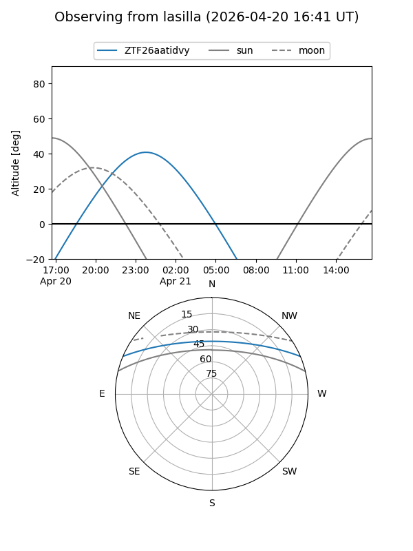
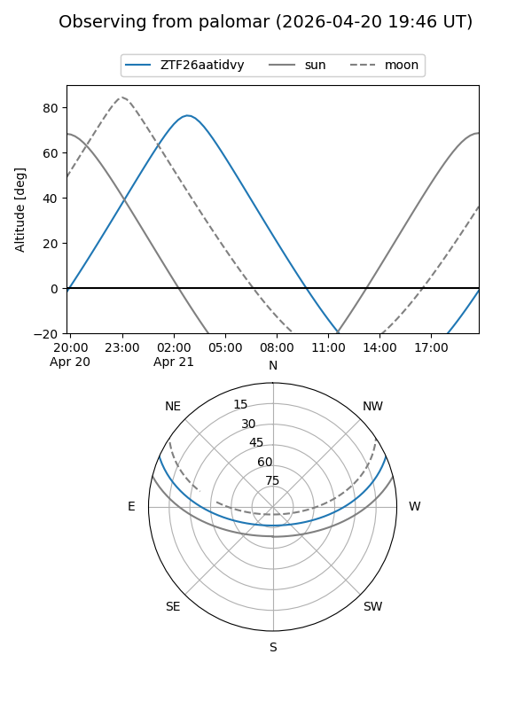

ZTF26aatidvy
Target ZTF26aatidvy at 2026-04-20 20:42
Aliases and brokers:
FINK: link
Lasair: link
ALeRCE: link
alt names
ZTF26aatidvy (ztf,fink_ztf)
Coordinates:
equatorial (ra, dec) = 134.4467,+19.97839
equatorial (HMS+DMS) = 08:57:47.21,+19:58:42.22
galactic (l, b) = (207.2531,+36.43516)
Flags:
Photometry:
last ztfg=19.87
2 ztfg detections
Lightcurve
Visibility


Additional plots